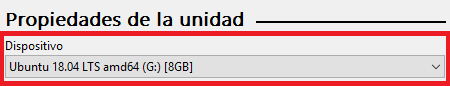
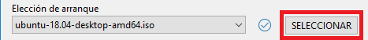
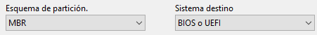
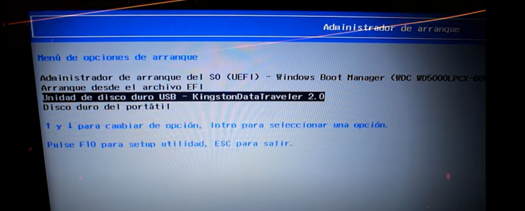
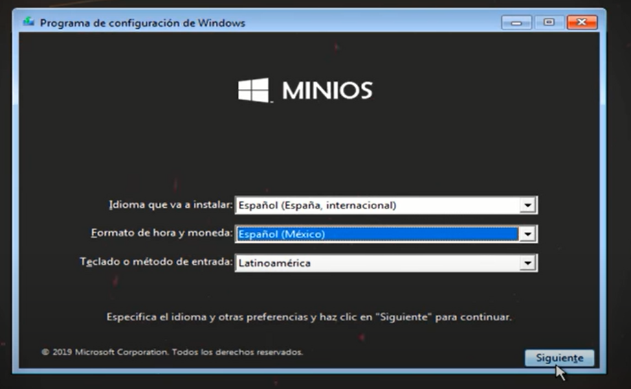
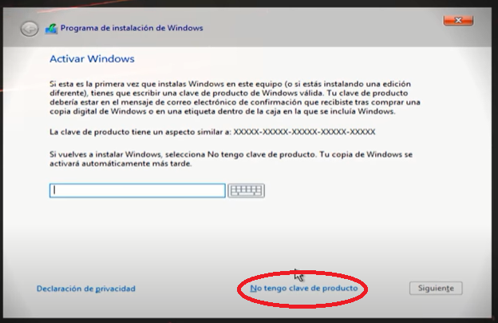
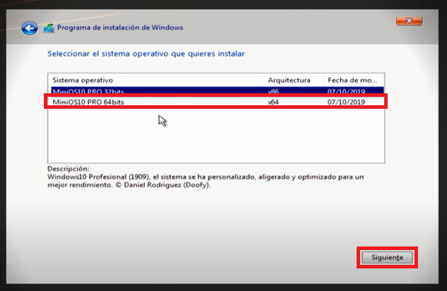
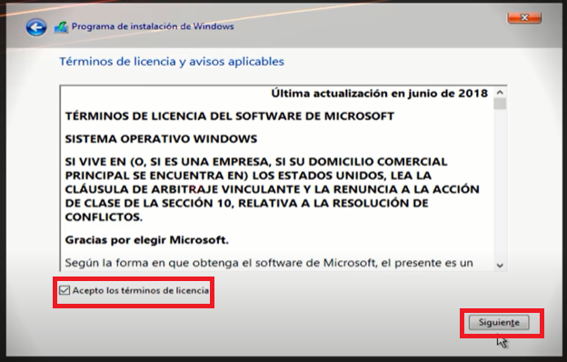
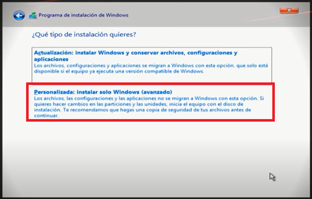
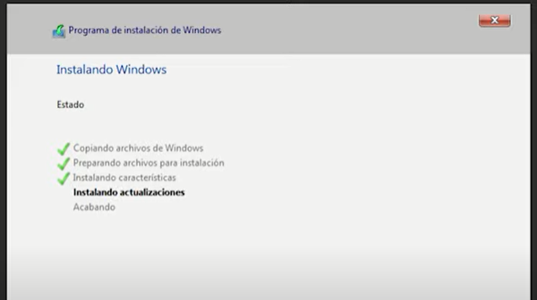

Cambiar de sistema operativo - Volver al inicio
Musiquita. Supongo que sería "krap" en vez de kpop, pero iwal esta weno weno

Este tutorial es largo y complejo
ATENCION, NECESITAS UN USB CON MÍNIMO 16GB DE ESPACIO
En este tutorial te enseñare a cambiar a un sistema operativo MUCHISIMO MEJOR QUE WINDOWS 10. Es una version de Windows 10 infinitamente optimizada, que de hecho es la que yo estoy usando actualmente al momento de redactar este texto. En mi experiencia, este sistema es muy bueno, le da vida a computadores viejitos o que están teniendo problemas de hardware, y los acelera mucho. Imagina que yo antes jugaba GTA con 20 fps, que si no lo sabes, son muy pocos, y es molesto jugar así. Ahora lo que hice es que cambié a este sistema, y volví a entrar al GTA. Ahora tengo 60 FPS, que son perfectos para cualquier juego. Puedo jugar tranquilamente. Te recomiendo encarecidamente que hagas el tutorial y sigas los pasos con precaución. Sobre todo, si yo estoy disponible para ayudarte, te recomiendo pedirme ayuda al instante, porque si lo hacemos entre los dos, podrías cambiar tu sistema operativo sin problema alguno mi vida.
1 - Descarga del contenido
Vale, lo primero, es descargar aquellas cosas que nos permitan instalar el sistema operativo, y para ello necesitamos: el sistema operativo, que en este caso, será Windows 10 MiniOS, y necesitamos un montador de imagenes virtuales, en este caso haremos uso de Rufus. Ahora, los links de descarga para que puedas acceder a ellos.
Descarga directa de Windows 10 MiniOS. Se descargará inmediatamente cuando pulses aquí.
Descarga manual de Windows 10 MiniOS: https://www.mediafire.com/file/iwfqc2bkgz4gzcd/7058d721071cfa689be7ad3626248d11.rar/file
Tiene un peso de 3GB.
Rufus 3.18
Descarga inmediata pulsando aqui
Descarga manual: https://rufus.ie/es/
Tiene un peso de 1.3MB
Una vez tengas estas dos cosas descargadas, te recomiendo moverlas al escritorio para trabajar más facilmente con ellas. Ahora, tenemos dos cosas: el ejecutable de Rufus y el .rar del sistema operativo.
2 - Preparación
Ya que te dije que estamos en el escritorio, voy a pretender que tu tambien lo tienes en el escritorio (que se que no, pero hazlo, porque te organizarás mejor mivida.), asi que, lo primero que haremos es extraer el archivo .rar que acabamos de descargar. Le damos clic derecho y "Extraer aquí.". Una vez se extraiga, vas a abrir Rufus. Te aparecerá algo asi al abrirlo.

No es tal cual a ti te aparecerá, pero es muy parecido. Ahora, lo que debes hacer, es seleccionar tu USB en el apartado de Dispositivo. Es muy probable que te aparezca otro nombre, te recomiendo que te fijes bien cual es, y lo selecciones con cuidado.

Ahora, tenemos que seleccionar el archivo que extraiste del archivo .rar. El archivo en cuestión es un archivo de imagen, o como se llama comumente en informática, un archivo ISO. Está en la carpeta que extraíste, asi que, ve allí y selecciona el archivo de imagen. Esto se hace por medio de hacer uso de "SELECCIONAR" en Rufus.

Solo tienes que preocuparte que donde dice esto diga MBR y BIOS o UEFI:

Y ahora debes darle a EMPEZAR. Una vez termine, estamos listo para instalar tu nuevo sistema.
3 - Instalación
Ahora debes apagar tu computadora, y cuando la vuelvas a encender, debes estar constantemente presionando F9 en tu teclado. Esta tecla lo que hace es encender tu computadora en un modo especial, llamado modo "Boot", el que básicamente despliega las opciones de inicio de sistemas operativos en tu computadora.
Te va a salir algo así.

Y digo algo así, porque es probable que te aparezca algo diferente. Lo que debes hacer es, con las flechitas de direccion, es decir, las que están abajo a la izquierda del teclado, vas a moverte entre las opciones del menú. Vas a seleccionar tu USB, y cuando la opcion del USB se muestre seleccionada, presionarás ENTER.
-
Cuando ya cargue, entonces te aparecerá el siguiente diálogo de configuración.

Aquí debes seleccionar tu idioma, y darle a siguiente, y luego, a instalar. Seguidamente, aparecerá este cuadro de dialogo. Debes darle a la opcion resaltada en rojo.

Y seguidamente te aparecerá este dialogo, preguntando por que distribución deseas instalar. Seleccionarás la resaltada en el reacuadro en rojo y le darás a siguiente.

Aquí aceptamos los términos y le damos a siguiente.

Aquí, es importante darle a PERSONALIZADA.

Aqui PIDEME AYUDA SIEMPRE QUE PUEDAS. Esta parte de la instalación es MUY DELICADA. Porfavor, si no estás segura de instalar el sistema, NO LO HAGAS. Aquí, probablemente a ti te aparezcan una o más particines del sistema, en el caso de que así sea, lo ideal es que formatees absolutamente todas las particiones y las elimines. Una vez formatees y elimines todas las particiones, obtendrás una pantalla parecida a la de la foto. Entonces, cuando esto esté asi, vas a seleccionar la unidad y darle a formatear siguiente.
Una vez le das a siguiente, se te va a comenzar a instalar.

Y ahora sigue una instalación de Windows... es bastante intuitiva, asi que estoy seguro que puedes hacerla solita jsjsj. Luego de instalar Windows, un programa llamado DELTA comenzará la optimización total del sistema, y probablemente te de a elegir un método de actualización del sistema operativo. Se distingue entre el verde, el amarillo y el rojo. El verde, siendo el más seguro, pero el que menos optimiza, hasta el rojo, que quita multiples funcionalidades en pos de hacer que el equipo sea profundamente optimizado. Yo, escogi el amarillo, ya que es una mezcla entre la estabilidad del verde y la optimización que realiza el rojo.
Eso es todo mi amor. Dime si te faltó saber algo <3